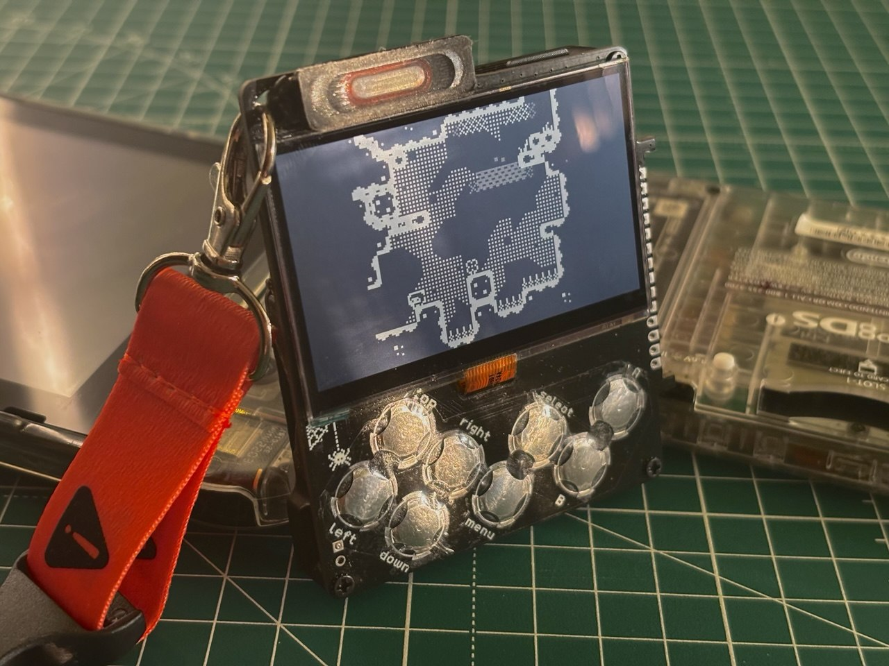
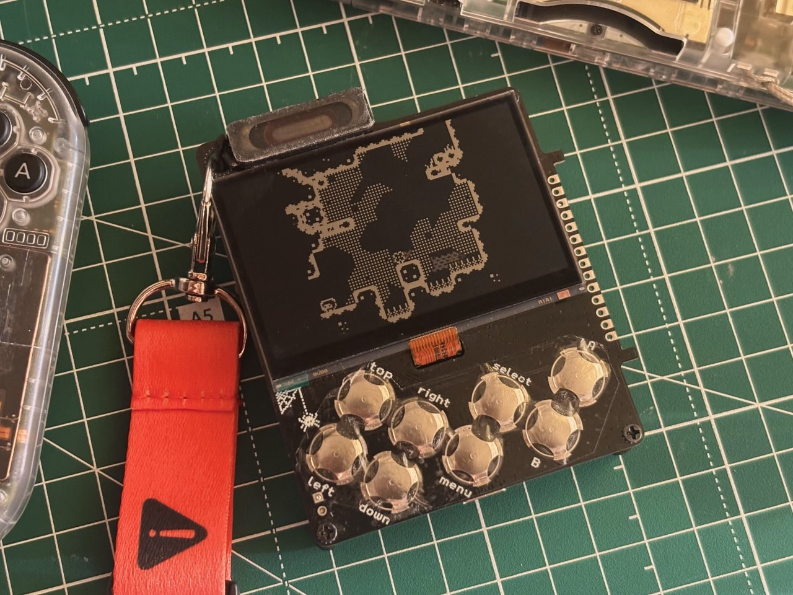
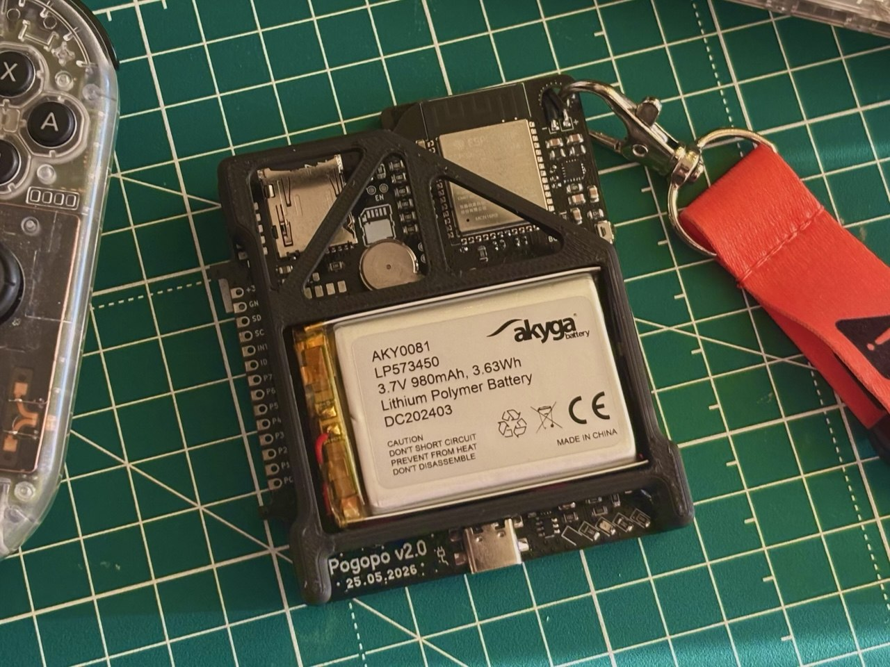
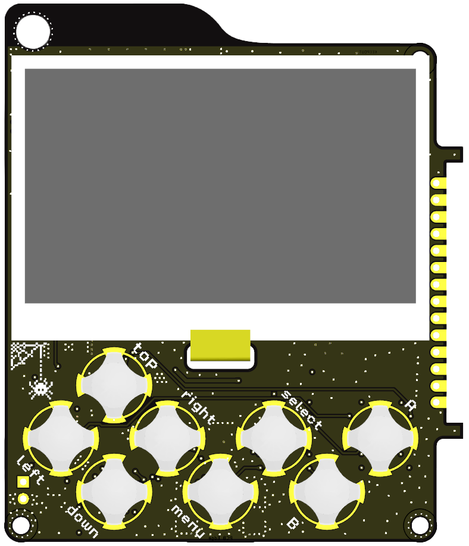
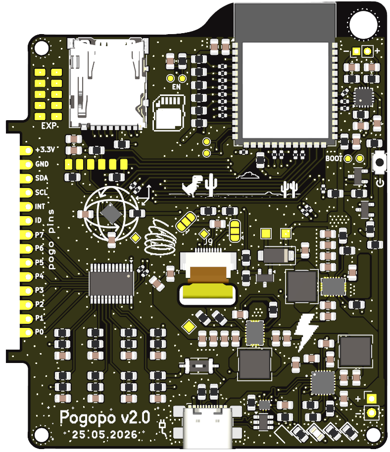
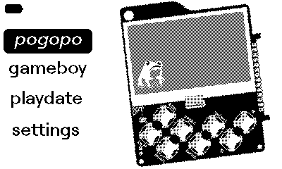
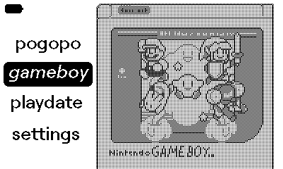

Project
Gallery
A closer look at the working handheld, its custom board, and the monochrome interface running on the 400 × 240 Memory LCD.
The handheld

Pogopo running on the Sharp Memory LCD.

The display, eight front controls, speaker, and exposed modular edge.

The rear assembly with the battery, microSD slot, ESP32-S3, and expansion pins.
Custom board

Front PCB layout around the display, controls, speaker, and expansion edge.

Back PCB layout with storage, processing, sensing, audio, and power circuitry.
Firmware in motion
 The startup sequence used by PogopoOS.
The startup sequence used by PogopoOS.
 Power-button quick menu with Resume, app-specific actions, volume, settings, and Home.
Power-button quick menu with Resume, app-specific actions, volume, settings, and Home.

PogopoOS launcher animation.

Game Boy library and launch flow.